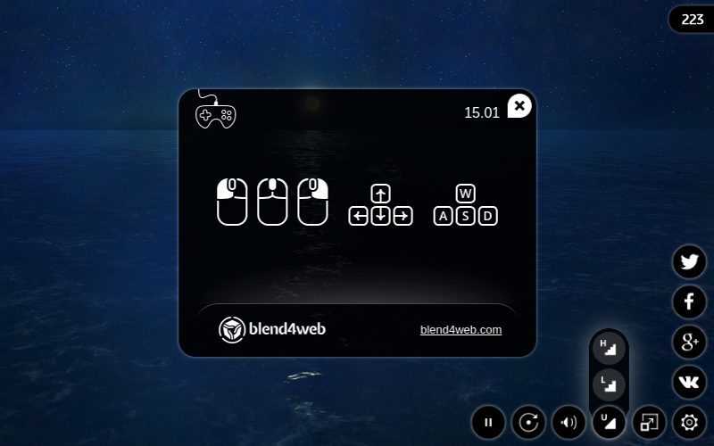
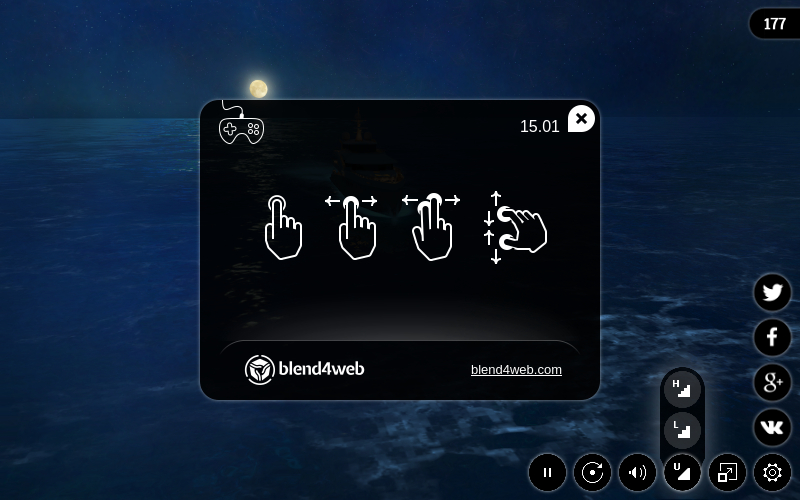
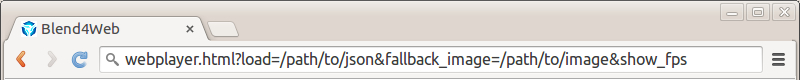

Веб-плеер¶
Веб-плеер представляет собой специализированное приложение для отображения моделей и сцен в режиме демонстрации.
Десктопная версия:
Мобильная версия:
Использование¶
Директорию с файлами веб-плеера deploy/apps/webplayer можно скопировать из дистрибутива Blend4Web SDK и разместить на сайте. Полученные в результате экспорта файлы сцен можно разместить на сайте и указать путь к ним (абсолютный или относительный) с помощью параметра веб-плеера load.
При экспорте в единый HTML файл интерфейс веб-плеера интегрируется автоматически.
Навигация¶
Управление камерой (в режимах Target и Eye) осуществляется мышью с нажатой кнопкой, а также клавишами W, A, S, D, R, F: вперед, влево, назад, вправо, вверх, вниз. Также поддерживаются стрелки и клавиши numpad.
Панель управления¶
Ниже показана панель управления веб-плеера.

- показ / скрытие панели управления;
- включение / выключение полноэкранного режима;
- установка качества сцены;
- включение / выключение звука;
- включение / выключение автоматического поворота камеры вокруг сцены;
- запуск / остановка движка;
- открытие окно помощи;
- кнопка Твиттер;
- кнопка Facebook;
- кнопка Google+;
- кнопка ВКонтакте.
Атрибуты¶
Веб-плеер принимает атрибуты из адресной строки браузера:
- для загрузки сцены используется обязательный атрибут
load, в который помещается относительный путь к JSON файлу. - необязательный атрибут
fallback_imageиспользуется для установки фона, заменяющего сцену при возникновении ошибки WebGL. - необязательный атрибут
fallback_videoиспользуется для установки видео, заменяющего сцену при возникновении ошибки WebGL. Может использоваться неоднократно с целью добавления видео файлов различных форматов. - необязательный атрибут
show_fpsприменяется для отображения счетчика кадров в секунду в правом верхнем углу плеера. - необязательный атрибут
autorotateиспользуется для включения автоматического вращения камеры сразу после загрузки сцены. - необязательный атрибут
compressed_texturesиспользуется для включения загрузки уменьшенных текстур и текстур в формате с компрессией (DDS).
Примечание
Если указаны параметры fallback_image и fallback_video, приоритет имеет fallback_image.

{kind=link}
{kind=link}
{kind=link}
{kind=link}
{kind=link}
{kind=link}